회원가입 & 로그인
이름 / 회사명 / 핸드폰 번호 / 이메일 / 비밀번호만 입력하면 가입과 동시에 자동 로그인됩니다.
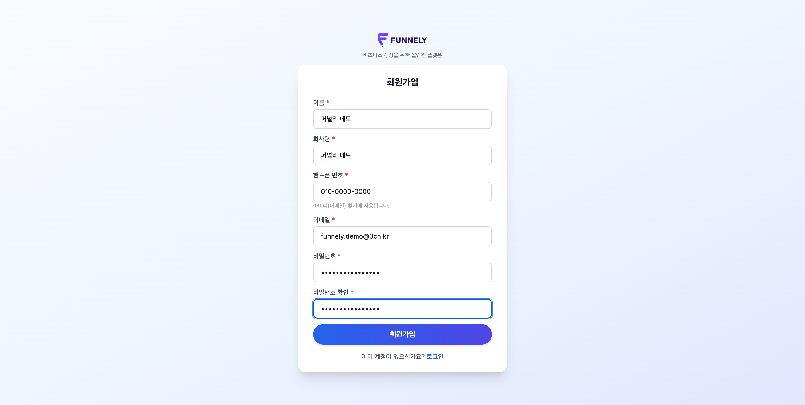
- 별도의 이메일 인증 절차가 없어 가입 즉시 대시보드를 사용할 수 있습니다.
- 가입과 동시에 프로 플랜 7일 무료체험이 자동으로 적용됩니다 (신용카드 등록 불필요).
- 핸드폰 번호는 나중에 "아이디(이메일) 찾기"에 사용되니 정확히 입력하세요.
대시보드
오늘 회사 상황을 한눈에 보여주는 첫 화면입니다.
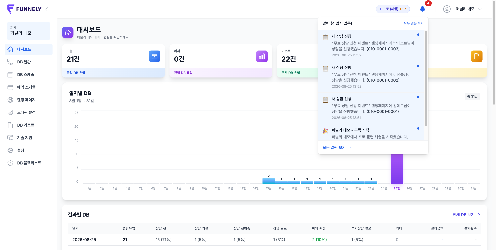
- 오늘 / 어제 / 이번주 / 이번달 DB 유입 건수를 카드로 바로 확인할 수 있고, 카드를 클릭하면 해당 조건으로 필터링된 DB 현황 화면으로 이동합니다.
- 일자별 DB 추이, 트래픽 유입 그래프, 결과별 DB 현황표, 최근 7일 데이터 요약까지 스크롤 한 번으로 훑어볼 수 있습니다.
- 우측 상단 종 모양 아이콘에서 새 상담 신청, 예약 확정 등 실시간 알림을 확인합니다.
랜딩 페이지
코딩 없이 상담/신청 폼이 포함된 랜딩페이지를 만들고 바로 공개합니다.
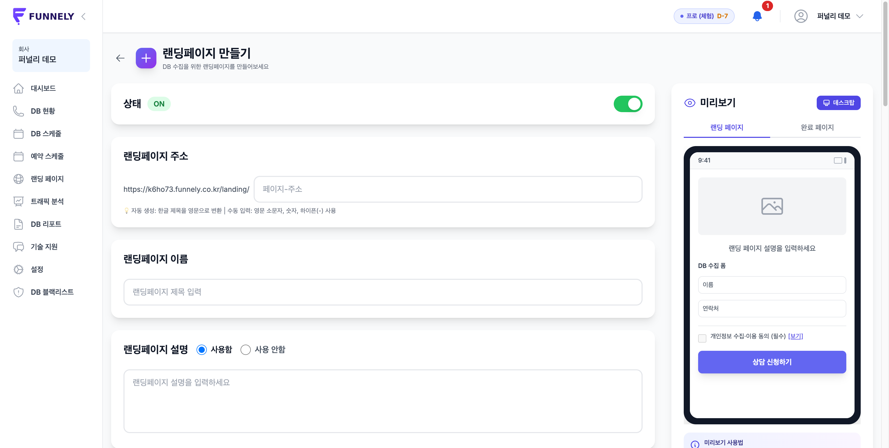
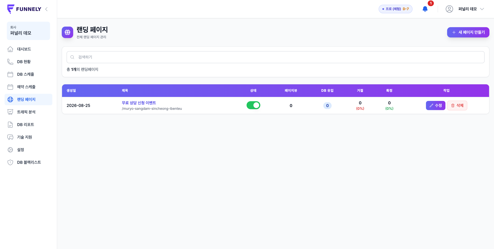
- "새 페이지 만들기"에서 제목·설명·수집 항목·완료 메시지를 입력하면 오른쪽에서 실시간 모바일 미리보기로 바로 확인됩니다.
- 완성한 페이지는 회사 전용 주소(
{회사ID}.funnely.co.kr/landing/{슬러그})로 즉시 공개됩니다. - 목록 화면에서 페이지뷰·DB 유입·거절·확정 건수를 페이지별로 바로 비교할 수 있습니다.
💡 만든 랜딩페이지 링크를 광고 소재나 SNS에 그대로 사용하면 됩니다 — 신청이 들어오는 순간 DB 현황에 실시간으로 쌓입니다.
DB 현황
랜딩페이지로 들어온 리드(고객 DB)를 실시간으로 관리하는 핵심 화면입니다.
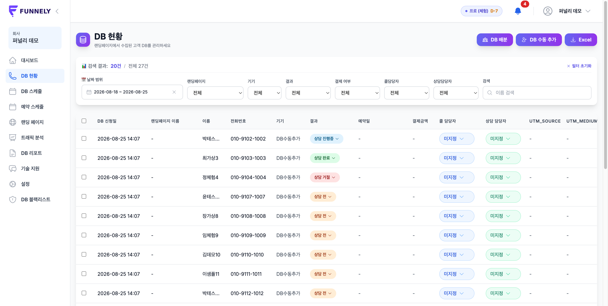
- 결과 열의 드롭다운으로 상담 전 → 진행중 → 완료 / 거절 / 예약 확정 등 상태를 바로 바꿀 수 있습니다.
- "예약 확정"으로 바꾸면 예약 일정 등록 팝업이 뜨고, 저장하는 순간 "예약 스케줄" 화면에 자동으로 반영됩니다.
- "DB 수동 추가"로 1건씩 입력하거나, "엑셀 업로드"로 정해진 템플릿(이름/전화번호/이메일/항목1~5)에 맞춰 대량 등록할 수 있습니다.
- "DB 배분"으로 콜 담당자·상담 담당자에게 리드를 나눠줄 수 있고, 날짜·랜딩페이지·기기·결과 등으로 세밀하게 필터링됩니다.
DB 스케줄
콜 담당자별 상담·추가상담 일정을 월별 캘린더로 관리합니다.
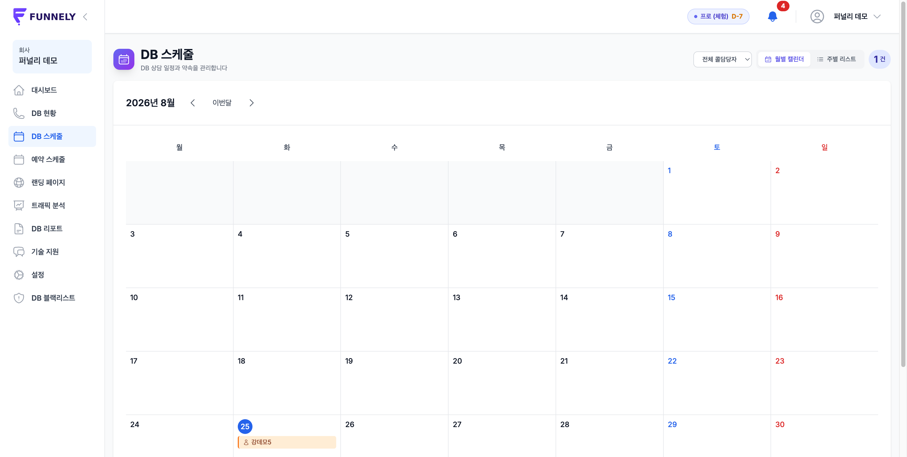
- "추가상담 필요"로 표시한 리드가 자동으로 해당 날짜에 표시됩니다.
- 담당자 필터로 특정 콜 담당자의 일정만 모아볼 수 있고, 월별 캘린더/주별 리스트 보기를 전환할 수 있습니다.
예약 스케줄
"예약 확정"으로 처리한 상담 건이 모이는 화면입니다.
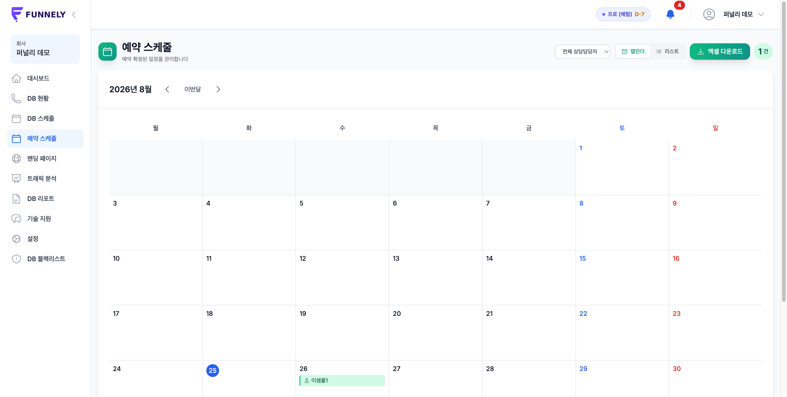
- DB 현황에서 상태를 "예약 확정"으로 바꿀 때 입력한 날짜·시간이 여기 캘린더에 그대로 표시됩니다.
- 캘린더 보기 / 리스트 보기를 전환할 수 있고, 엑셀로 내보내 오프라인으로 공유할 수도 있습니다.
트래픽 분석
랜딩페이지 방문(페이지뷰)과 DB 전환을 날짜·기기별로 분석합니다.
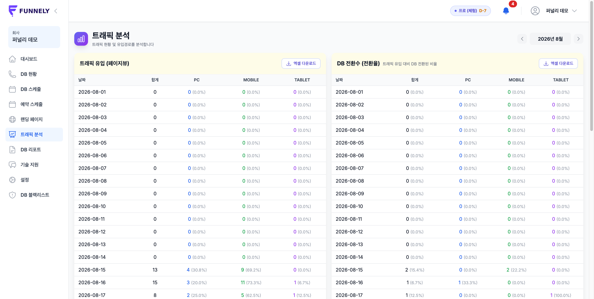
- 왼쪽 표는 트래픽 유입(페이지뷰), 오른쪽 표는 DB 전환수(전환율)을 PC/모바일/태블릿으로 나눠 보여줍니다.
- 어떤 기기에서 유입이 많은지, 유입 대비 실제 상담 신청 전환율이 어느 정도인지 날짜별로 추적할 수 있습니다.
- 각 표는 엑셀로 다운로드해 별도 보고 자료로 활용할 수 있습니다.
DB 리포트
부서별·담당자별 DB 처리 현황을 월 단위로 집계합니다.
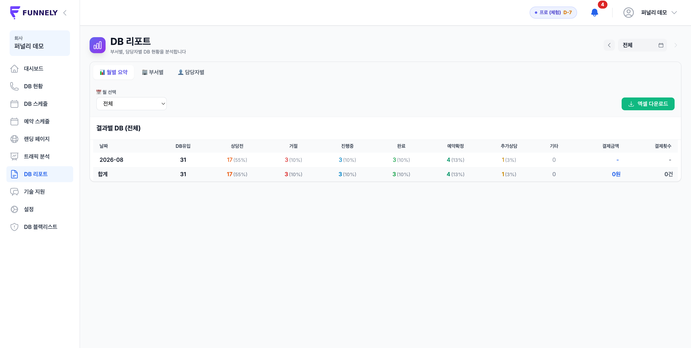
- "월별 요약 / 부서별 / 담당자별" 탭으로 원하는 단위로 성과를 확인할 수 있습니다.
- 결과별(상담전·거절·진행중·완료·예약확정·추가상담) 건수와 비율, 결제금액·결제횟수까지 한 표에서 확인됩니다.
알림
새 상담 신청, 예약 확정, 구독 관련 소식을 실시간으로 받습니다.
위 "대시보드" 섹션 스크린샷 오른쪽 상단의 종 모양 아이콘을 눌러 확인할 수 있습니다.
- 새 DB가 들어올 때마다 "새 상담 신청" 알림이 실시간으로 쌓입니다 (Supabase Realtime 기반).
- "모두 읽음 표시"로 한 번에 정리하거나, "모든 알림 보기"에서 전체 이력을 확인할 수 있습니다.
기술 지원
기술적인 문의사항을 등록하고 답변을 확인하는 공간입니다.
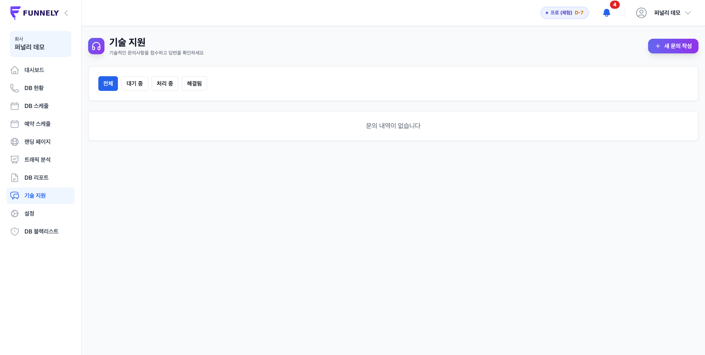
- "새 문의 작성"으로 문의를 등록하면 대기중 → 처리중 → 해결됨 순서로 상태가 바뀝니다.
설정
회사 정보, 연동, 구독/결제, 팀 관리를 이 화면 하나에서 처리합니다.
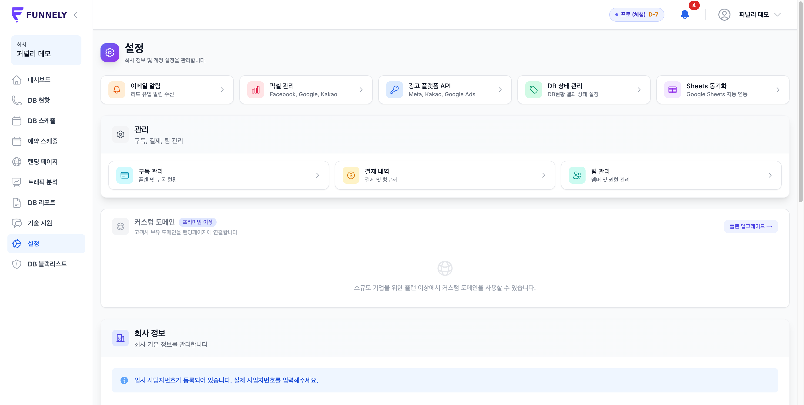
- 픽셀 관리: Facebook·Google·Kakao 광고 픽셀을 연동해 전환 이벤트를 추적합니다.
- 광고 플랫폼 API: Meta·Kakao·Google Ads API를 연동합니다.
- DB 상태 관리: "DB 현황"의 결과 드롭다운 항목(상담전/거절/진행중 등)을 회사 상황에 맞게 커스터마이징합니다.
- Sheets 동기화: 구글 스프레드시트와 리드를 자동으로 동기화합니다.
- 그 외 구독 관리·결제 내역·팀 관리(멤버 초대/권한)·회사 정보(사업자번호 등)도 이 화면에서 관리합니다.
DB 블랙리스트
스팸/수신거부 번호를 등록해 이후 자동으로 걸러냅니다.
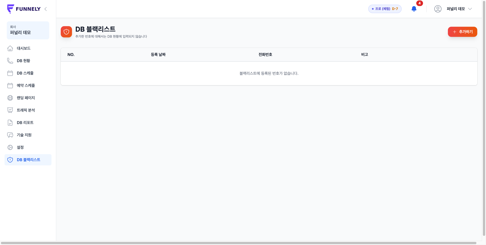
- "추가하기"로 등록한 전화번호는 이후 랜딩페이지에서 신청해도 DB 현황에 저장되지 않습니다.